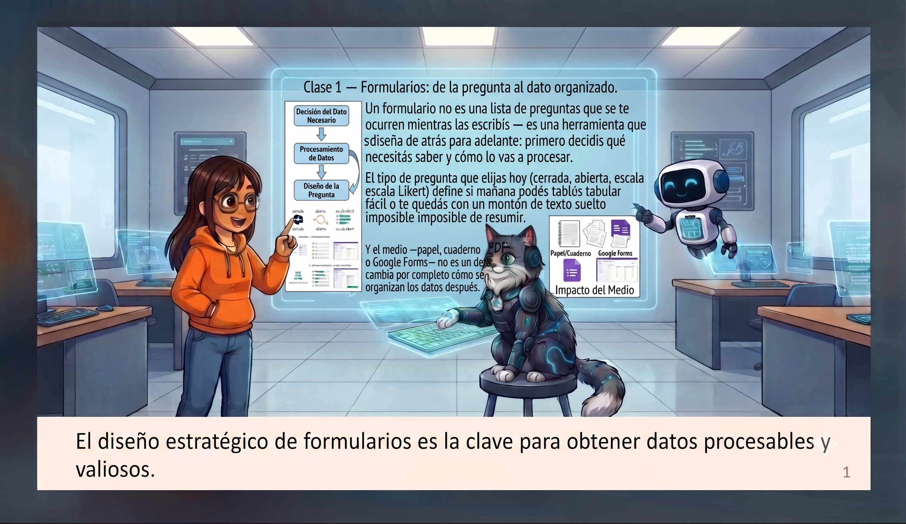
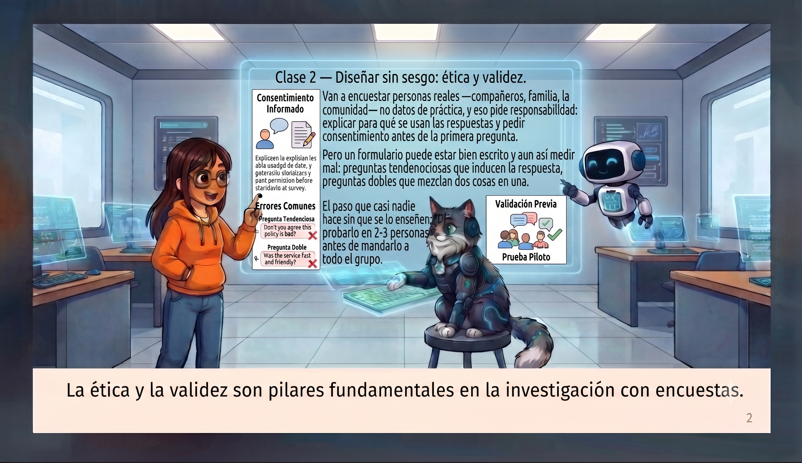
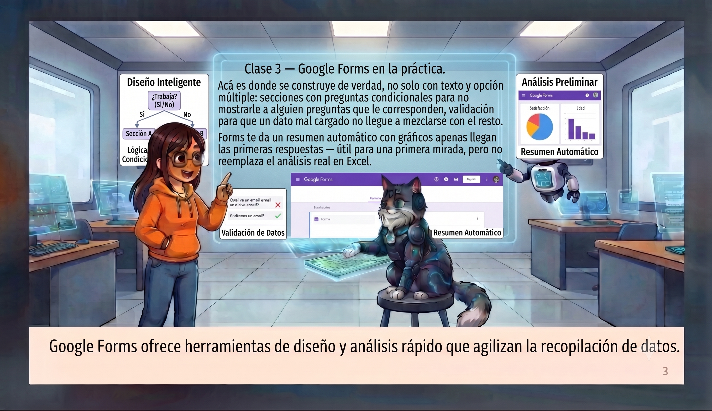

Formularios: de la pregunta al dato organizado
Un formulario no es una lista de preguntas que se te ocurren mientras las escribís — es una herramienta que se diseña de atrás para adelante: primero decidís qué necesitás saber y cómo lo vas a procesar, recién después escribís la pregunta.
El tipo de pregunta que elijas hoy define si mañana podés tabular fácil o te quedás con un montón de texto suelto imposible de resumir: cerradas (rápidas de contar), abiertas (ricas pero difíciles de tabular) y escalas Likert (opinión convertida en número). Y el medio —papel, cuaderno o Google Forms— cambia por completo cómo se organizan los datos después.

Diseñar sin sesgo: ética y validez
Van a encuestar personas reales —compañeros, familia, la comunidad— no datos de práctica, y eso pide responsabilidad: explicar para qué se usan las respuestas y pedir consentimiento antes de la primera pregunta.
Pero un formulario puede estar bien escrito y aun así medir mal: preguntas tendenciosas que inducen la respuesta ("¿No te parece que...?"), preguntas dobles que mezclan dos cosas en una, o lenguaje ambiguo que cada quien interpreta distinto.

Google Forms en la práctica
Acá es donde se construye de verdad, no solo con texto y opción múltiple: secciones con preguntas condicionales para no mostrarle a alguien preguntas que no le corresponden, y validación para que un dato mal cargado no llegue a mezclarse con el resto.
Forms da un resumen automático con gráficos apenas llegan las primeras respuestas — útil para una primera mirada, pero no reemplaza el análisis real en Excel.


Con los datos ya organizados, el siguiente paso es integrarlos en un documento que los presente con claridad — la guía de Word retoma justo desde ahí.